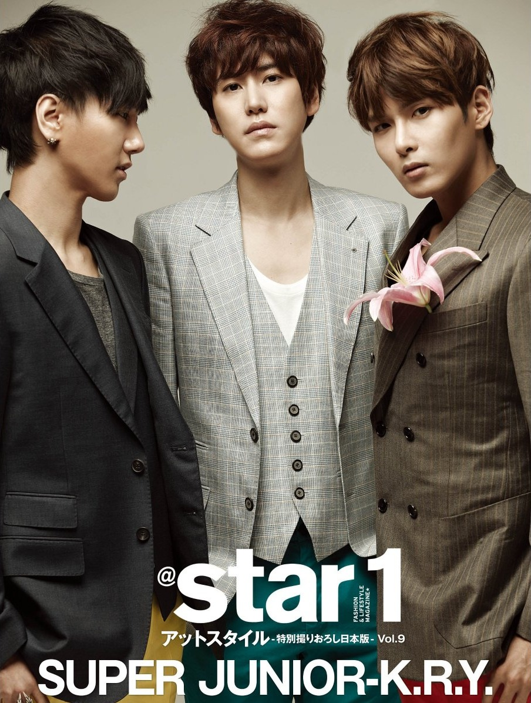

SUPER JUNIOR-K.R.Y.
|  | Grupo | ||||||
|---|---|---|---|---|---|---|---|
| Nombre inglés | SUPER JUNIOR-K.R.Y. | ||||||
| Nombre coreano | 슈퍼주니어-K.R.Y | ||||||
| Carrera | |||||||
| Fecha de debut | 5 de noviembre de 2006 | ||||||
| Años en activo | 2006 - hoy | ||||||
| Origen | Seúl, Corea del Sur | ||||||
| Discografía | |||||||
| Coreano |
|
||||||
| Japonés |
|
||||||
| Miembros | |||||||
| En activo | |||||||
| Redes Sociales | |||||||
|
Miembros de SUPER JUNIOR-K.R.Y. Yesung, Kyuhyun y Ryeowook. |
|
||||||